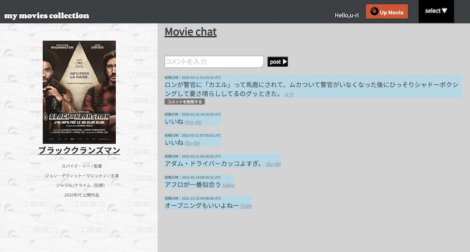
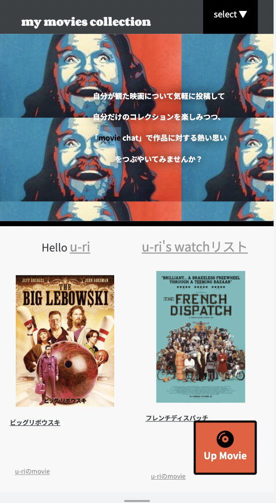

my movies collection
(映画のレヴュー投稿及び、チャットアプリ）
開発環境
Ruby / Ruby on Rails / MySQL / GitHub / Heroku / Visual Studio Code
-
概要
制作時間 150時間 URL https://my-movies-collection-37188.herokuapp.com ID saku PASS 1919 -
動作テスト
テスト用アカウント
mail saku@saku PASS 191919
OUTLINEアプリケーションの概要
自分が観た映画の記録をコレクションとして、備忘録として投稿できると同時に、その映画についての感想や自分なりの想いを発信することができるアプリケーションを開発しました。
主な機能はユーザー登録機能、投稿機能、チャット機能、お気に入り機能です。
ユーザー登録をすると自分が観た映画についての記録を投稿でき、投稿した内容はトップページ及び、”マイコレクションページ”へ表示されます。ヘッダーのプルダウンリストから”movie chat”を選択すると、チャットページへ遷移します。
”movie chat”のトップページには様々な映画が表示されており、クリックすると、その映画について他のユーザーとチャットを楽しむことができます。
また、他のユーザーが投稿した映画の記録には”watchリストへ追加”が表示されていて、クリックすると「自分も観たい映画」としてリスト化しておくことができます。watchリストはヘッダーのプルダウンリスト及び、トップページから確認できます。
-
開発に至った経緯
趣味でよく映画を観るのですが、素晴らしい映画を見終わった後とその前とでは「違う自分になっている」と感じることがよくあります。
今までに観た映画の蓄積そのものを愛おしく思う、映画ファンとしてそんな感覚があり、その蓄積をコレクションとして可視化できたらいいなと考えていました。ブログやTwitter、Instagramでも投稿はできるけれど、「コレクションとして可視化する」という点ではほかの情報量が多すぎると感じていました。映画を観終わったあと、文章の構成など気にせず気兼ねなくサクッと投稿できて、自分のコレクションに加えることができる、そんなアプリケーションがあったらいいな、という思いからこのアプリケーションを思いつきました。
また、映画が好きな仲間とそれぞれの感想や考察を気軽に意見交換できる場があればいいなと思い、チャット機能も加えることとなりました。
-
開発で工夫したこと
〜チャットルームについて〜
・投稿内容に対するコメント機能の実装ではなく”チャットルーム”を作成しました。理由は、同じ映画に関する投稿が複数あった場合に、コメント内容が重複してしまったり、新しい投稿の方へコメントが偏ってしまうと考えたからです。
・チャットルームの作成には管理者制限を設けました。理由としては、チャットルームをどのユーザーでも作成できるとなると、チャットルーム自体が重複する可能性があるからです。管理者制限は'rails_admin'というRubygemを導入し、設定しました。
・”LINEのようにスムーズにコミュニケーションが取れる”ことを目指して、jQueryでAjax処理を実装しました。〜投稿について〜
「専門知識がなくてもサクッと気軽に投稿できる」ことがコンセプトなので、投稿時の入力必須項目は最低限に実装しています。文章の構成などは気にせず感じたままの感想を投稿できるように、しっかりフォーマット化されているのも特徴です。 -
今後実装したいと思っていること
現在、レスポンシブデザインに対応中です。更にUIを意識し磨いていくことと、SNSアカウントとの連携を目標にしています。